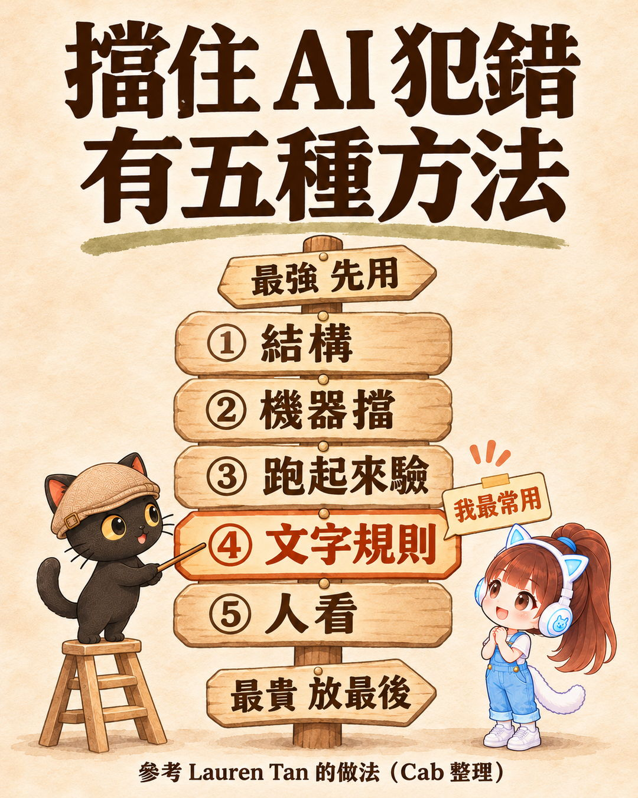
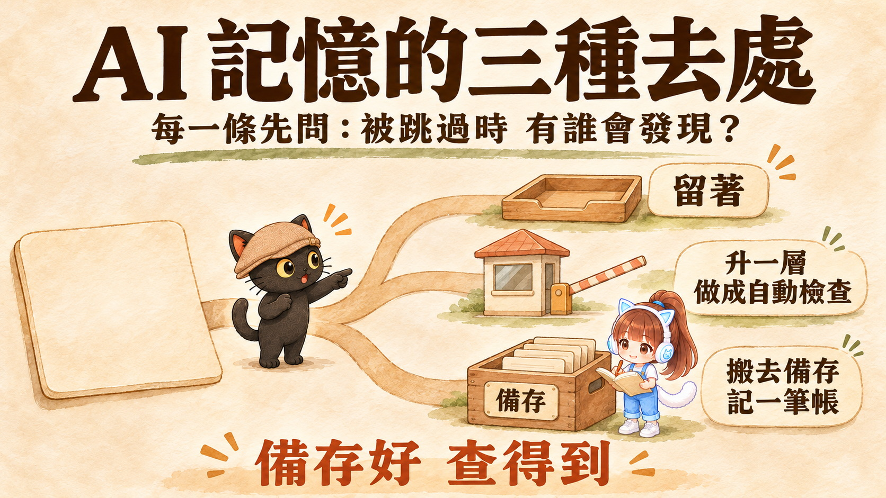

我常跟 AI 說「記住」。講多了，它幫我記的事累積到四百多條，我整理過三次，還是又滿出來。這篇講我怎麼替這些記憶加上「退場」：哪些可以收掉、收到哪裡、怎麼確定之後還找得到。做法是跟一位工程師 Lauren Tan 借的，我把她的方法對照自己的系統之後，改了三件事。這三件事是 2026 年 11 月 20 日剛改好的，跑起來實際怎麼樣我會持續追蹤，之後再寫一篇。
- 常常跟 AI 說「記住」，或把要求寫進自訂指令，東西越來越多，不知道哪些可以收掉的人。
- 同一件事糾正過 AI 好幾次，它還是會再犯的人。
- 幫團隊或客戶導入 AI，要想清楚規則以後怎麼維護的人。
- 一個判斷：AI 記住的一件事，該留著、該往上升一層，還是可以退場。
- 一張表：擋住 AI 犯錯的五種方法，由強到弱。
- 記憶退場的門檻：什麼可以退、什麼不退、怎麼備存與還原。
- 兩個每月看一次、目標是零的數字。
- 一段可以直接貼給你的 AI 的盤點提示詞，用 ChatGPT、Claude、Gemini 都可以。
我請 AI 記住的事有 436 條，目錄整理了三次又滿了
先講一下「記憶」在我這邊長什麼樣子。我每次跟 Claude 說「記住」，或糾正它一次，它就寫一個小檔案，再把檔名加進一份目錄。每次開新對話，它會先讀那份目錄。
如果你用的是 ChatGPT 或 Gemini 網頁版，把下面講的「記憶檔」換成「它記憶功能裡的那一長串」，或「你貼在自訂指令裡的那些要求」，整篇一樣讀得通。
2026 年 11 月 20 日這天，我的數字是這樣：
| 項目 | 數字 |
|---|---|
| Claude 記住的事 | 436 條，其中 287 條是我糾正它之後記下的 |
| 目錄 | 17,468 字，我自己訂的上限是 17,000 字 |
| 目錄整理過幾次 | 三次：10 月 14 日、11 月 12 日、11 月 19 日 |
11 月 19 日才整理完，隔天又超過上限。
原因是我以前整理的方式只有一種：目錄太長，就把說明文字搬回各個小檔案，讓目錄短一點。條目本身一條都沒有少。
AI 記住的一件事，可以有三種去處。
| 去處 | 什麼情況 | 怎麼做 |
|---|---|---|
| 留著 | 要靠 AI 當場判斷的事，或剛記下來還在觀察 | 不動 |
| 往上升一層 | 講過了還在犯 | 做成會自動擋下來的檢查，不再只靠它記得 |
| 退場備存 | 已經有檢查會擋，或已經寫進正式規則，記憶只是重複 | 搬到備存夾、記一筆帳，不刪除，之後查得到 |
AI 的記憶為什麼只會變多、不會變少
原因有三個。
寫進去太容易。我說一句「記住」，或糾正一次，就多一條。這本來是好事，我不用重複交代。但進來的門很寬，出去的門沒有開。
沒有退場。我的規則主檔 AGENTS.md（寫給所有 AI 看的規則檔）在 10 月就有退場機制：每個月檢查一次，太舊、沒在用、而且已經有別的東西接手的條文，就拿掉並記進日誌。當時我說的是：
記憶這一層一直沒有跟上。這次我跟 AI 說：「這個退場這件事情，我之前早就想做了。」
有些記憶早就被更硬的東西接手，卻沒人回頭收。舉一條實例。我有一條記憶寫「官網的主資料夾不能直接改檔」，內文還寫著「事前攔截的 hook 還在候選階段，所以這條靠自律」。hook 是 AI 做某個動作之前會自動跑的一支小程式，像門口的警衛，不合規就擋下來。實際上那支 hook 早就上線了，寫這篇的當天，AI 還被它擋了一次。警衛已經站在門口，牆上那張「請自律」的字條卻還貼著，而且內容已經過期。
- 寫了一堆規則給 AI，為什麼還是沒人執行？ 這一段只提到規則主檔有退場，那篇講每條規則要掛在哪一種引擎上，以及條文每個月怎麼退。
Lauren Tan 的做法給了我一把尺：擋住一個錯有五種方法，文字排倒數第二
剛好這時候我讀到一份整理，講的是 Lauren Tan 怎麼讓 AI 自己寫程式、自己驗收。
Lauren Tan 的 GitHub 帳號是 poteto。她的 GitHub 個人頁寫的是 xAI 的軟體工程師、React Compiler 核心團隊（2026-11-20 查）。她把自己用 AI 寫程式的整套做法開源成 pstack，放在 Cursor 官方的外掛 repo 裡，授權是 MIT。
我讀到的中文整理是 Cab（CabLate）寫的。他讀了她 11 篇長文與貼文、5 場演講與訪談，加上 pstack 的原始碼，寫成一份 26 頁的 PDF，並在文件裡註明她沒有參與、沒有背書。裡面有一張表，把「擋住一個錯」的方法由強到弱排成五層。這張表是 Cab 整理的：前四層來自她的「糾正之後的四級去處」，第五層人工審查來自她的演講。
| 層 | 白話 | 例子 |
|---|---|---|
| ①結構 | 讓錯根本做不出來 | 一件事只留一種做法，容易用錯的東西整個拿掉 |
| ②機器擋 | 一做錯就被自動檢查擋下 | 程式的自動檢查（工程師說的型別、lint、CI），報錯訊息直接寫明怎麼改 |
| ③跑起來驗 | 做完要交出證據 | 測試、實際操作成品、修改前後對照 |
| ④文字規則 | 寫下來叫 AI 照做 | 只留給真的要當場判斷的事 |
| ⑤人看 | 人工審查 | 成本最高，放最後一道 |

文字規則排在倒數第二，整理裡給的理由只有一句：規則被跳過的時候，沒有任何檢查會因此失敗。
照這張表看，我那 436 條記憶就是文字，排在第四層，卻是我最常用的一層。
我請 AI 去讀 pstack 裡 correct 這個技能的原文，四級的順序對得上：先改架構，再交給型別與自動檢查，再來是測試，文件放最後。原文還有三個做法，後面我都用上了：
- 同一類錯誤出現兩次，才算一類。
- 每加一個新檢查，要先確認它在當初那個真實的錯誤上會失敗。
- 錯已經不可能發生，就把對應的規則刪掉。
- AI 做的東西要怎麼確認，才敢放手讓它自己做？ 這一段只講五層怎麼排，那篇講 pstack 從規劃、實作到驗收的流程，以及換成知識工作版的六個步驟與提示詞。
拿這把尺量我自己的系統：五層都有，最厚的是文字
我接著問 AI：「我到底可以怎麼用，我這邊有沒有什麼需要修正或參考的？」
我原本就有一套四層控制，由硬到軟：
| 層 | 是什麼 | 什麼時候用 |
|---|---|---|
| Hook | 門口的警衛，動作不合規就擋下 | 漏了代價高、會重複犯的事 |
| AGENTS.md | 所有 AI 共用的規則主檔 | 每次對話都需要、各家 AI 通用的規則 |
| 技能包 | 寫給 AI 照著做的工作說明書 | 特定情境的操作步驟 |
| 記憶 | 各家 AI 自己記的事 | 暫存與個人偏好，各家不互通 |
11 月 1 日我還加了一條「錯誤轉 hook」，當時我說的是：「錯誤的東西要記得幫我轉 hook。」做法是被我糾正的錯誤先記帳，同一類出現第二次，就直接做成 hook 或寫進技能包，不用先問我。
圖比螢幕寬，可以左右滑動看完整張 →
文字版
- 記一筆。
- 第二次才轉（跟她一樣）。
- 選最小範圍。
- 測四種情況（可借一招：用真的舊錯誤測）。
- 先用只提醒的版本上線。
把五層一層一層對過去，結果是這樣：
| 五層 | 我的系統對到什麼（2026-11-20 實測） |
|---|---|
| ①結構 | 技能包的標籤行、路由索引由腳本生成，不手寫；刪除與部署各只有一個入口 |
| ②機器擋 | hook 資料夾 59 支腳本（含共用模組），只在 Claude 系的 AI 生效 |
| ③跑起來驗 | 交接單的完成條件與驗收命令、部署後線上實測、另一家 AI 審稿、hook 的測試檔 24 個 |
| ④文字規則 | AGENTS.md 約 2.6 萬字、各技能包、Claude 記憶 436 條 |
| ⑤人看 | 不可逆、對外送出、金錢這類事由我點頭 |
大部分我已經在做。同一類錯誤兩次才回寫規則、寫的 AI 不能自己判自己過關、成功訊息不算證據、派工要寫明完成條件，這幾件兩邊是一樣的。
有兩個地方我沒有照搬。她的最後一步是 AI 驗收後自動合併程式；我對外發文、網站上線，還是停在我點頭，因為內容好不好沒辦法用程式驗。她的自動合併建在沒開源的公司內部框架上，那部分沒有公開。另外，她的產量數字（每月合併多少份修改）屬她本人公開自述，未經第三方查核，這篇不引用。
對完之後，要補的地方很清楚：第四層最厚，而第四層裡面最容易長、又沒有出口的，就是記憶。
我改了三件事（2026-11-20）
第一件：記憶可以退場，退場是搬到備存夾加記帳
我對退場只有一個要求，原話是：「退場都要備存好，至少都要查得到，這樣就可以了。」所以退場不刪檔，只搬到備存夾，並在帳本記一列：哪一條、為什麼退、現在由誰接手、備存在哪裡。
什麼可以退，門檻是二選一，而且都要填得出「由哪個檔案接手」和「那個檔案裡找得到的原句」：
- 已經有機器擋：這條記憶要防的錯，已經有 hook 或工具會擋。
- 已經有正本：內容已經寫進 AGENTS.md 或技能包，記憶只是重複。
什麼不退：
- 關於我是誰的記憶。
- 含隱私的記憶。
- 30 天內新增或改過的，先觀察。
- 近 90 天還被我糾正過同一類事情的。這代表它還在犯，該往上升一層讓機器擋，還輪不到收掉。
- 有時效性的事實，例如人事、工具版本、進行中的專案，過期與否等我確認。
圖比螢幕寬，可以左右滑動看完整張 →
文字版
- 盤點候選。
- 逐條讀過。
- 試跑。
- 退場（搬到備存夾、清目錄、記帳）。
- 查得到、還原得回來。
我請 AI 寫了一支小工具照這套門檻做。上面那些不能退的情況，除了含不含隱私要我自己確認，其他工具自己會擋下來；中途任何一步失敗，會自動回復到動手前。沒有這支工具也可以照同一套門檻手動做，做法在最後一段。
第二件：新的檢查，要用真的發生過的錯誤測過
這一件借的是 correct 原文那句「新檢查要在當初那個真實的錯誤上失敗」。
我原本的規定是新 hook 上線前要測四種情況：該擋的、該放行的、邊界、故障。這次補一句：該擋的那一例，至少要有一例取自真實發生過的錯誤，跑出來要真的擋下。只用自己想像的例子不算測過。
做退場工具的時候就先用上了。測試裡放了一例以前真的出過的事：批次取代文字時，取代的樣式寫得太寬，把隔壁的內容一起吃掉。工具要證明它只拿掉指定的那一條，檔名只差一截的、隔壁的都不動。
第三件：每個月看兩個數字，目標都是零
這兩個數字來自 Cab 那份整理裡的落地建議，我換成自己系統量得到的版本：
| 數字 | 怎麼量 | 2026-11-20 |
|---|---|---|
| 被我重複糾正、卻還沒轉成機器擋的類別 | 糾正帳本裡重複出現但還沒處理的分類 | 1 類 |
| 已經有東西接手、卻還沒退場的記憶 | 工具用關鍵字掃一遍 | 候選 73 條，其中 35 條過得了「滿 30 天、近 90 天沒被糾正」兩道門檻 |
第二個數字只是關鍵字提示。每一條都要 AI 讀過、填得出由誰接手才算，所以真正能退的會比 35 少。
規則和工具改完之後，我讓兩家 AI 來審，再先退 2 條試試
規則和工具是 Claude 寫的，所以我交給另外兩家審：Google 的 Gemini 4 Neon，和 OpenAI 的 GPT-6.1 Sol（透過 Codex）。
| 輪 | Gemini 4 Neon | GPT-6.1 Sol |
|---|---|---|
| 第一輪 | 有條件通過，必改 4 條 | 有條件通過，必改 4 條 |
| 第二輪 | 通過 | 退回，還有 2 條 |
| 第三輪 | 不需要 | 通過 |
兩家一共提了 10 條必改，都改了。其中四條：
- 一批連續退好幾條時，備份檔名只記到秒，後面的會蓋掉前面的。
- 清目錄時「整行刪除」的判斷太寬，同一行後面還有別的規則也會被刪。
- 糾正帳本讀不到時，工具竟然當成「最近沒被糾正」而放行。
- 檔案搬完才記錄，中途失敗就退不回來。
改完後，退場工具的測試共 39 項，全過。接著先拿 2 條試：退場、用關鍵字查得到、還原演練一次、再正式退場。
| 退場前 | 退 2 條後 | |
|---|---|---|
| Claude 記住的事 | 436 條 | 434 條 |
| 目錄 | 17,468 字 | 17,407 字 |
只退 2 條，目錄只少了 61 個字，還在上限之上。這一步要確認的是整條路走得通。數字要等每個月一批一批退，才會動。
這套做法哪裡我有把握，哪裡還沒有
有把握的：退場不會弄丟東西。搬到哪、為什麼退、由誰接手都有記錄，查得到，也演練過還原。
還沒有把握的：
- 工具只能驗「接手的檔案存在、裡面找得到那句話」，驗不了那句話是不是真的涵蓋那條記憶。這一步要 AI 讀過才算，所以我規定每批先退 1 到 2 條，驗過再放大，一批最多 20 條。
- 含不含隱私，工具也驗不了，退之前要自己確認。
- hook 只在 Claude 系的 AI 上生效。Codex、Gemini 靠的還是文字規則。
- 記憶放在每台電腦自己的本機，退場只對執行的那一台生效；帳本放在知識庫，所以各台都查得到。
- 這是我一個人、單一知識庫的做法。多人團隊共用規則時，誰可以決定退場、帳本放哪裡，要另外定，這篇沒有處理。
- 剛改好，還沒跑過一輪每月檢查。一個月後數字會不會真的往下，現在不知道。
接下來每個月，我會看這幾個數字
每月 1 號的知識庫健檢，固定回報：
- 這一輪退場幾條、還原幾條。
- 目錄幾個字，有沒有回到 17,000 字以內。
- 候選還有幾條。
- 上面那兩個要歸零的數字，跟上個月比是升還是降。
我會特別看「還原幾條」。如果一條記憶退場之後，我又糾正了同一類的事，代表退錯了，那一條要還原，改成往上升一層。
這是我剛剛改好的，我會持續追蹤，數字出來之後再寫一篇。
- 改完規則，怎麼知道 AI 到底有沒有變乖？ 這一段只講每月看哪幾個數字，那篇講改完規則當下看不出效果時，怎麼設計觀察與驗收。
ChatGPT、Claude、Gemini 都能做：不裝工具，今天就盤一次 AI 的記憶和規則
下面三步，用哪一家都一樣。
- 把你交代過 AI 的要求列出來：請它記住的事、自訂指令、規則檔。
- 每一條問兩題：這條被跳過的時候，有沒有任何東西會發現？這條要防的錯，現在還會發生嗎？
- 沒東西發現、又常被跳過的，往上升一層，能自動檢查就自動檢查。錯已經不會發生的，搬到另一個備存檔，不要直接刪。只用網頁版的人，備存就是把那幾條複製到自己的筆記；確認抄好了，再從 AI 的記憶清單移除。
可以直接貼給你的 AI：

我對退場的要求還是那一句：備存好，查得到。
參考來源
- Lauren Tan 的 pstack（MIT 授權）。本文引用的三個做法出自
skills/correct。 - Cab（CabLate）〈AI 怎麼驗收才敢放手？Lauren Tan 的五層防錯法〉與 26 頁中文 PDF《讓 AI 值得放手》。五層表與兩個零目標數字出自這份整理。
- 寫了一堆規則給 AI，為什麼還是沒人執行？ 規則要掛引擎，AGENTS.md 條文怎麼退場。
- AI 做的東西要怎麼確認，才敢放手讓它自己做？ pstack 的完整流程與知識工作版六步。
- 改完規則，怎麼知道 AI 到底有沒有變乖？ 改完規則怎麼觀察與驗收。
- AI 規則檔裝了攔截器，52 天一條都沒擋下來 長期只會提醒、不會擋的檢查，為什麼等於沒裝。
想聽更多 AI 應用與知識管理的實戰做法
我每個月固定辦兩場免費線上講座，分享 AI 應用與知識管理的實戰做法。
每個月兩場免費講座。